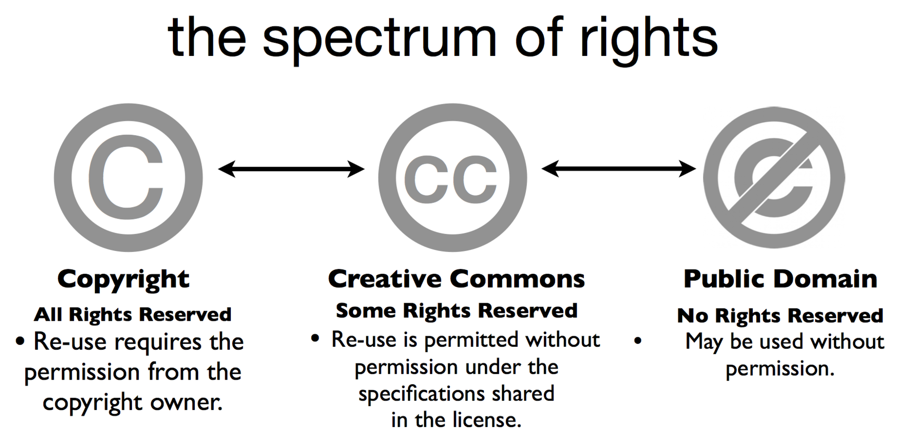

ITWD6.408
ITWD6.408
Copyright, Creative Common Licences, Fair Use
Copyright
Copyright and creative commons are put in place to protect original work from being stolen by others. Works that can be covered may include books, music, movies, or artwork. There are four types of creative commons licences to protect a creator’s works, each one giving the users of this protected material different rights.
- Attribution – The original creator must be credited to use the material.
- Share Alike – If you create an adaption of the work, it needs to be licenced under the same license.
- Non Derivative – The work must not be changed, but used as it is.
- Non Commercial – The work cannot be used for commercial purposes, as in no money can be made from it.
There are sometimes exceptions to copyright law, which fall under “Fair Use”. You can freely use copyrighted material without obtaining permission from the proper owner, depending on what the material is being used for. Areas that fall into fair use include material used for parody, educational purposes, reporting, and commentary. Wikipedia Link
Privacy & Web Privacy Policy
Privacy Policy
A website's privacy policy is a document that informs a user of how their personal data will be used. This data can include their name, age, contact details, and more depending on the context of the website.
- Any data collected by this website will be stored securely, and not sold to any third party companies. At any time, users may request data we have regarding them.
How to improve your website SEO
Search Engine Optimisation
- Relevancy - Keeping your website updated with relevant information will draw in more visitors, since those looking for information regarding more recent events may find your website on the search page.
- Metadata - The title and description metadata can be used by browsers to return an accurate search request, so users will be able to find your website more easily through search.
- Keywords - Most users won't come accross your website by searching its name, but rather through a question. By having these questions as keywords, your website will appear whenever anyone searches them.
- Linking - Referencing your sources will make your website come accross as a more trustworthy and reliable source of information. The links will also act as keywords for bigger media sites.
- Alt Tags/Accessibility - Having accessibility features such as alt tags will make your website usable to a larger range of people, such as those with disabilities.
Factors you should know when chosing a web hosting provider
Web Host Provider
- Subscription Period and Pricing - Some web hosting providers will offer a more long-term deal for a cheaper overall price, which can get you more value depending on your situation. If you're already an already established business wanting to expand to online, the long-term plan could be a better option. But if you're just starting out or experimenting with websites, it would be safest to go with a shorter plan for the time being since it's quite a big commitment to keep your website running for multiple years.
- Server Reliability - It's extremely important to keep your website running almost all the time since you never know when someone will need to visit it. If your website is often down, you may defer potential visitors from coming back another time which isn't good for SEO. This is why it's important to choose a host provider with reliable servers, so it's always available to your users.
- Features - Every website is different in terms of what it needs, since there are a lot of different purposes. If your website requires a lot of personal information, then you'll want something with more security. Some have features that all website owners will need, such as good customer support. It's important to make sure your web host meets all the basic needs and the needs specific to your website. DreamHost
Web Performance and Maintenance
Performance and Maintenance
- Move the Javascript tag to the bottom of the page so it will load Asynchronously.
- Optimize image sizes, since bigger images will take longer to load.
- Choose a web host provider with higher performance hosting.
- Make sure all of Javascript is in its own file, and all of CSS is in its own file rather than different files for different pages.
- Reduce the number of HTTP requests like fonts, as the requests take up more resources.
Web Security
Web Security
- DOS Attack - A DOS attack (Denial of Service) is done by flooding the target with requests which takes up all the resources. This can be prevented by using firewalls that are configured to combat these attacks.
- Phising - A Phising attack is done by decieving a person into downloading a virus, usually through an email link. This can be prevented by studying the email before clicking on any links, looking for mistakes or messaging the sender to validate information.
- Session Hijacking - When a session is made between a user and the server, an attacker can substitute its IP address for the user's computer to take over control of the session. This can be prevented by encrypting the connection, which can be done using a VPN.
- Brute Force - A program can be made to try every possible combination for a victim's login details. This can be prevented by setting a very strong and random password, and taking advantage of any "two factor authentication" features that are offered.
- Trojan Horse - Hiding dangerous programs inside of safe ones. Some anti-virus software can detect a Trojan, but it can also be prevented by the user being aware of what they're downloading. fortinet